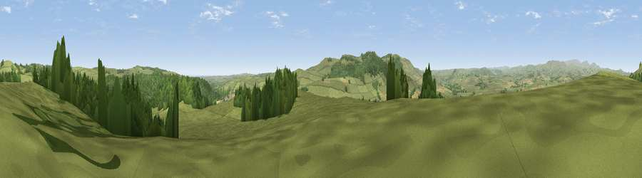

Viewpoint near Rothbury
#5974 in England · top 21% of its area beats it · near RothburyWhere it is
The exact computed spot (NU 04725 02675). Click the marker for map links.
The view, rendered

A 360° render of this exact spot computed from the terrain model, tree cover and land cover — summer colours, afternoon light, calibrated against photographs of famous viewpoints. Real trees, hedges and buildings will differ in detail.
The panorama
Grey silhouette: terrain skyline in each direction (720 bearings, Earth curvature and refraction included). Dashed green: skyline with trees (+15 m) and buildings (+8 m) as obstacles. Blue strip: how far the ground is visible on each bearing.
Where the view opens
Wedge length = distance to the farthest visible ground on that bearing (vegetation-aware). Rings at 10, 25 and 50 km.
What fills the view
66% grassland · 29% woodland · 5% cropland
Angular shares of the visible panorama (visual magnitude), not map area. Landscape diversity 0.35 (0–1 Shannon).
Key numbers
More beautiful places nearby
The staircase of upgrades: each row has a higher view potential than everything closer. Driving times are estimates from straight-line distance, calibrated against real road routing — check an actual route before setting out.
| Place | Direction | Drive | Score |
|---|---|---|---|
| Viewpoint near Rothbury | N · 2 km | ~6 min | 74.3 |
| Cartington Hill | N · 3 km | ~7 min | 74.8 |
| Viewpoint near Rothbury | S · 4 km | ~9 min | 81.1 |
| Dove Crag | SSW · 4 km | ~10 min | 82.3 |
| Viewpoint near Glanton | NNE · 14 km | ~25 min | 82.9 |
| Viewpoint c12273_7856 | NW · 16 km | ~28 min | 83.7 |
| Viewpoint near Eglingham | N · 19 km | ~33 min | 83.8 |
| Viewpoint c12396_7887 | NNW · 20 km | ~34 min | 85.7 |
55.31813, -1.92709 · source: screening · position refined by local search. Computed location — check access rights before visiting.